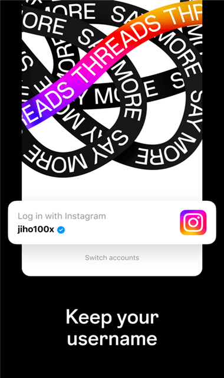

Threads 快问快答：从登录到联邦宇宙，一篇说清
整理了关于 Threads 最常被问到的八个问题——Instagram 强绑定登录怎么破、回复权限三档怎么选、联邦宇宙值不值得开、和 X 比有啥差异，读完你就知道装不装。
整理一篇关于 Threads 的快问快答。Meta 出品、基于 Instagram 的短文本社交平台，上线以来争议和热度一直没断，下面八个问题基本覆盖了新手最关心的点。
Threads 到底是什么？
一句话：Meta 做的、和 Instagram 账号体系强绑定的短文本社交应用，设计上直接对标 X（原 Twitter）。去Threads官网看就知道，它没有独立的账号系统，完全寄生在 Instagram 之上——你手机上没装 Instagram 就用不了 Threads，反过来 Instagram 用户则可以一键授权登录，连密码都不用再设。这种强绑定是官方的设计选择，不是 bug，也绕不开。
谁适合用，谁可以跳过？
如果你本来就是 Instagram 的重度用户、身边的朋友也都在用，那 Threads 值得装——一键批量关注你在 Instagram 上已经关注的人，零成本就能把社交关系搬过来。如果你已经在 X 上扎根多年、也没打算换平台，那 Threads 对你意义不大，内容生态和用户基数目前还差一截。喜欢短文本刷信息流、厌倦了 X 上的垃圾推文和广告的人，可以试试看。
怎么装和登录，最容易卡在哪里？
安装和登录流程本身不复杂，安装包从官方下载拿，但 Instagram 强绑定这一点会绊住不少人。第一步先确认手机上已安装并登录了 Instagram，打开 Threads 后它会自动识别当前的 Instagram 账号，点确认就能进。最常见的卡点有三个：Instagram 没登录或版本太旧导致 Threads 识别不到账号；网络问题导致授权页白屏；多账号用户不小心登错了 Instagram 小号。切换账号也要先在 Instagram 那边切好，再回来刷新 Threads。

回复权限三档到底怎么选？
这是 Threads 区别于多数平台的一个核心设计：在你点发布之前，就要决定这段对话对谁开放，而且发布后不能改。三档分别是 Anyone（所有人都能回复）、Profiles you follow（仅你关注的人）、Mentioned only（仅被你 @ 的人）。日常分享和公共话题选 Anyone 就好；怕被陌生人冲评论区就选仅关注的人；点名请教特定几个人时用 Mentioned only，能杜绝无关声音。发错了权限只能删帖重发，所以发帖前多花两秒想清楚。
通知太多吵死人，怎么关？
Threads 的通知可以按类型精细开关，路径是个人主页 → 右上角菜单 → 设置 → 通知。建议保留的是回复与提及、转发与引用——这两类是真正的互动信号；点赞通知和"关注的人发帖"提醒大概率是噪音，可以关掉；"猜你喜欢"式的推荐通知直接关没商量。嫌一类一类开关麻烦的话，最省事的办法是用"暂停全部"一键静音，深度工作时段或休假时特别好用。注意系统级和应用内两层通知控制是叠加的——手机系统设置里关了 Threads 的通知权限，应用内怎么开都没用。
联邦宇宙是什么，值不值得开？
联邦宇宙（Fediverse）是 Threads 内置的一项开放互联功能，开启后你的公开档案和帖子会同步到其他支持 ActivityPub 协议的服务器（比如 Mastodon），那边的用户也能搜到你、关注你、给你的帖子点赞回复。开启步骤很简单：个人主页 → 设置 → 联邦宇宙 → 确认开启，想了解更细的参数和同步规则可以去Threads文档翻。但有几个前置条件：档案必须是公开状态、账号年满 18 岁。一个容易忽略的点是，关闭互通后新内容不再流出，但已经同步到其他服务器的历史内容不会自动追回——各服务器对已同步内容有自己的处理规则。开不开取决于你想不想跨平台扩大影响力，对普通用户来说不是必选项。
和 X 比，哪个更好用？
两者定位接近但体验差异明显。Threads 的内容审核相对温和，Meta 的社区规范比 X 严格，极端言论和垃圾信息少一些；但缺点是用户基数和内容丰富度远不如 X，想追特定领域的实时资讯还是得去 X。Threads 的优势在于和 Instagram 的社交关系打通，熟人互动的氛围比 X 好；X 的优势在于生态成熟、实时性强、话题覆盖广。目前还没有"谁完全替代谁"的结论，两个都装、按场景切换是不少人的选择。
值不值得长期用？
如果你有 Instagram 社交关系打底、喜欢干净的短文本信息流、不介意内容生态还在成长，Threads 值得长期装着当一个补充的社交出口。但如果你对 X 已经形成依赖、或者期待 Threads 完全取代 X 的内容深度和实时性，那大概率会失望。它更像是 Instagram 社交关系的延伸，而不是一个独立的新平台。
最后一句：有 Instagram 账号、想试试更干净的短文本社交，装；否则可以观望。整理的 Threads 资料也同步存放在了GitHub、Gitee 和 GitCode 上，方便不同网络环境下随时查阅。